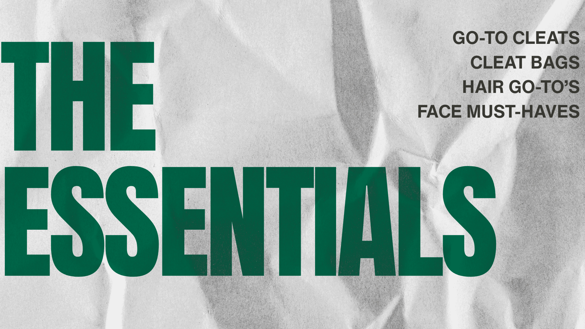

Welcome to the Essentials section! Here you'll find my teams must-haves when it comes to training and games.
Typically, I wake up at 6:30am and head over to our athletic facility to get ready for training. Many girls live off-campus close by! I live about a 10 minute walk away from school and can be there even quicker on my scooter!In our locker room, I change into my soccer clothes, grab my cleats and our big stadium jackets since SF gets pretty cold in the morning. Then I head to the ATR (athletic training facility).
Women's soccer is typically the first in the ATR since we train first before many other sports. It's nice to train in the morning with time for classes in the afternoon. Some teams like Baseball/Track don't train till 4:00pm.
To prepare for our fitness and training, many girls bike, roll out, stretch to warm up their bodies. Many also get taped if they have minor injuries such as an ankle sprain. Then we all head to Negoesco Stadium together at 7:15am.
Training can consist of a lot of different things, and no matter what we do, we are ALWAYS competitve! Some of our favorite games are 3-team game, Bumper game and Spanish Rondo!
Every girl on the team has their own ritutal to prepare for training. I asked the girls for their go-to products they use all the time to have the best training. From skincare to cleat bags, scroll down to see our favorites.
Scroll below to see some of our teams favorite items listed below!

Our team is a Nike school, so we are grateful to wear these types of cleats! The main styles for nike soccer cleats are Tiempo's, Mercurial's, and Phantom's. They all fit a bit differently depending on your foot shape, playing style and style preferences! Below are some reasons why the girls love their cleats!

Recently, cleat bags have been really common for girls in college soccer to have! A lot of my friends at other schools and conferences have the Salt Athletic Cleat bag! It's a great purchase that keeps your cleats protected and clean.

Having good hair always contributes to a good game. Most of our teams do each other's hair and love sharing different products. On eo fmy favorites is Dae a cactus slick back gel!

San Francisco has crazy weather. With a mix of sun, rain and fog, a lot of us wear sunscreen daily during training and games. Listed are some other things such as facial spray, mascara and lotion.